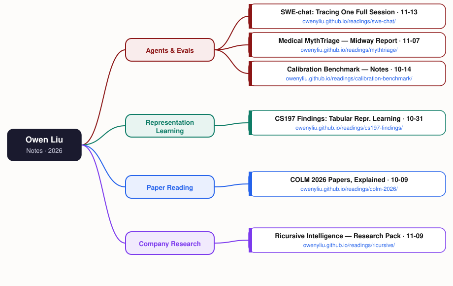

← Owen Liu
Notes on papers, projects, and companies I am reading and thinking about. Each note links to a plain-Markdown version that agents can read directly (see llms.txt).

| 11-13 | SWE-chat: Tracing One Full Session A walk-through of real coding-agent sessions from the SWE-chat dataset — where the agent drifts, and what pushback looks like. |
| 11-07 | Medical MythTriage: Can a Fast Decision Model Be Trusted to Pre-Screen Medical Claims? My CS329Z midway report: a fast model settles medical claims only when it is at least 95% precise — on HealthFC it is, on MEDFACT it is not. |
| 11-09 | Ricursive Intelligence: A Research Pack (and a Name Trap) Notes on Anna Goldie and Azalia Mirhoseini’s AI chip-design company — and why it is not Richard Socher’s Recursive Superintelligence. |
| 10-31 | Evaluating Numerical Preprocessing for Tabular Representation Learning — Findings CS197 Project 3 findings (with Max Lee and Rita Xiang): the standardized baseline is genuinely good, and prediction and fidelity dissociate. |
| 10-14 | Calibration Benchmark — Reading Notes What would a good benchmark for agent calibration look like? Non-toy tasks, memory, and confidence that matches reality. |
| 10-09 | COLM 2026 Workshop Papers, Explained Plain-English explainers of 11 Stanford and 4 Berkeley papers from the COLM 2026 workshops. |